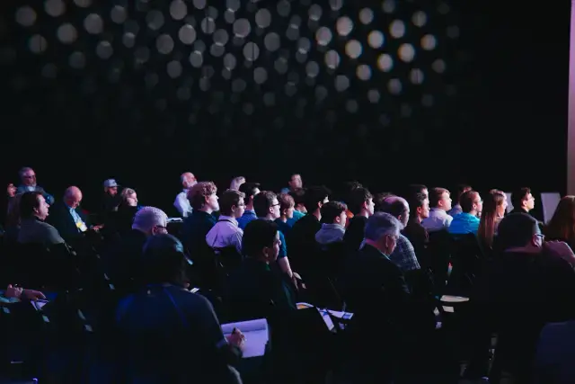
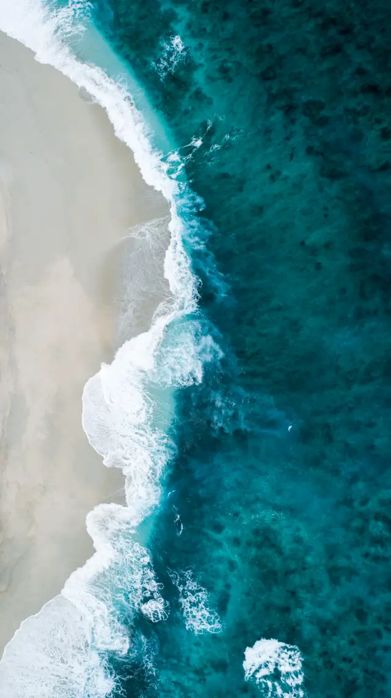
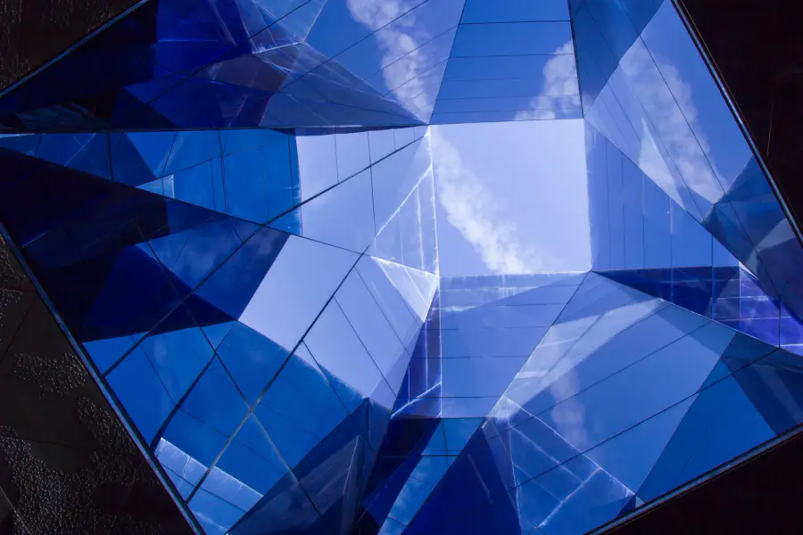

Tide Figure
A bronze for the harbour, cast from one clay sketch.
Sculptor · Portfolio
SCULPTOR
Clay, bronze, and the patience to remove everything that is not the form.
Selected work

A bronze for the harbour, cast from one clay sketch.
Nine works about weight and rest.

A carved seat that became a neighborhood landmark.
Torso studies in reclaimed marble offcuts.
A film of one pour, four hours, twelve hands.
Five figures for a hospital courtyard.

About
Clay, bronze, and the patience to remove everything that is not the form.
Everything on this page is made to be scrolled slowly. The work below is the honest list — outcomes attached, fluff removed.
Currently
Focus — Figure modeling
Also — Mold & cast
Based — Odense
Services
Clay, bronze, and the patience to remove everything that is not the form. Figure modeling is where this shows up most — ask for examples on a call.
Clay, bronze, and the patience to remove everything that is not the form. Mold & cast is where this shows up most — ask for examples on a call.
Clay, bronze, and the patience to remove everything that is not the form. Bronze pouring is where this shows up most — ask for examples on a call.
Clay, bronze, and the patience to remove everything that is not the form. Stone carving is where this shows up most — ask for examples on a call.
Clay, bronze, and the patience to remove everything that is not the form. Installation is where this shows up most — ask for examples on a call.
Clay, bronze, and the patience to remove everything that is not the form. Armature build is where this shows up most — ask for examples on a call.
Contact
Odense · replies within a day